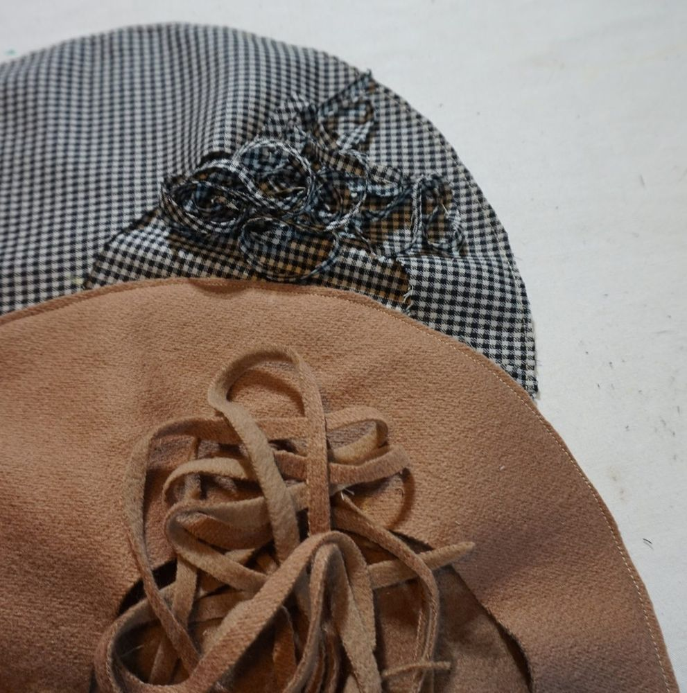
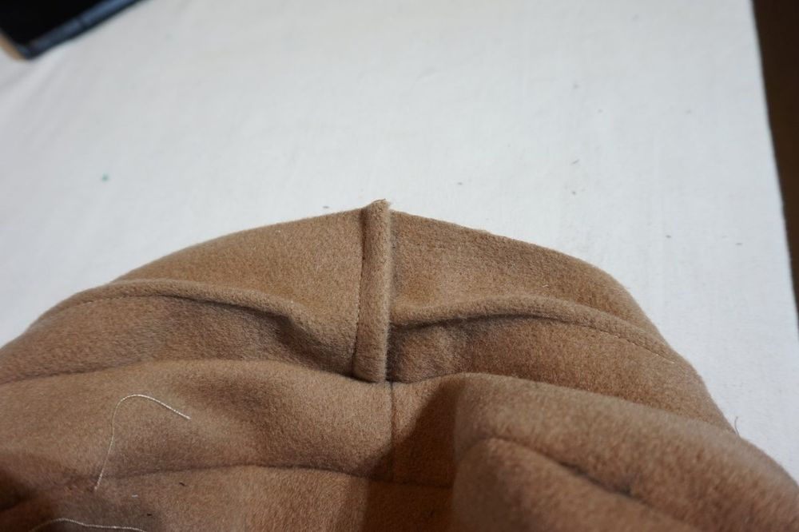
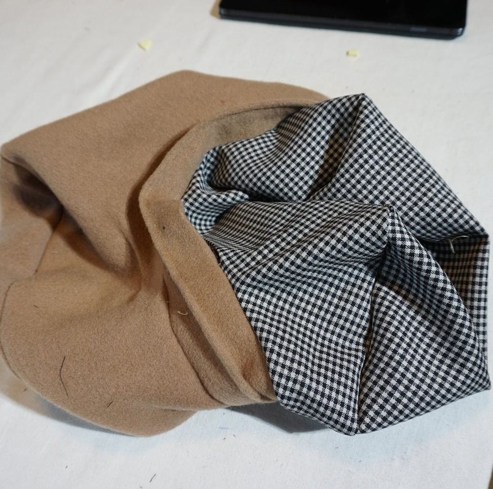
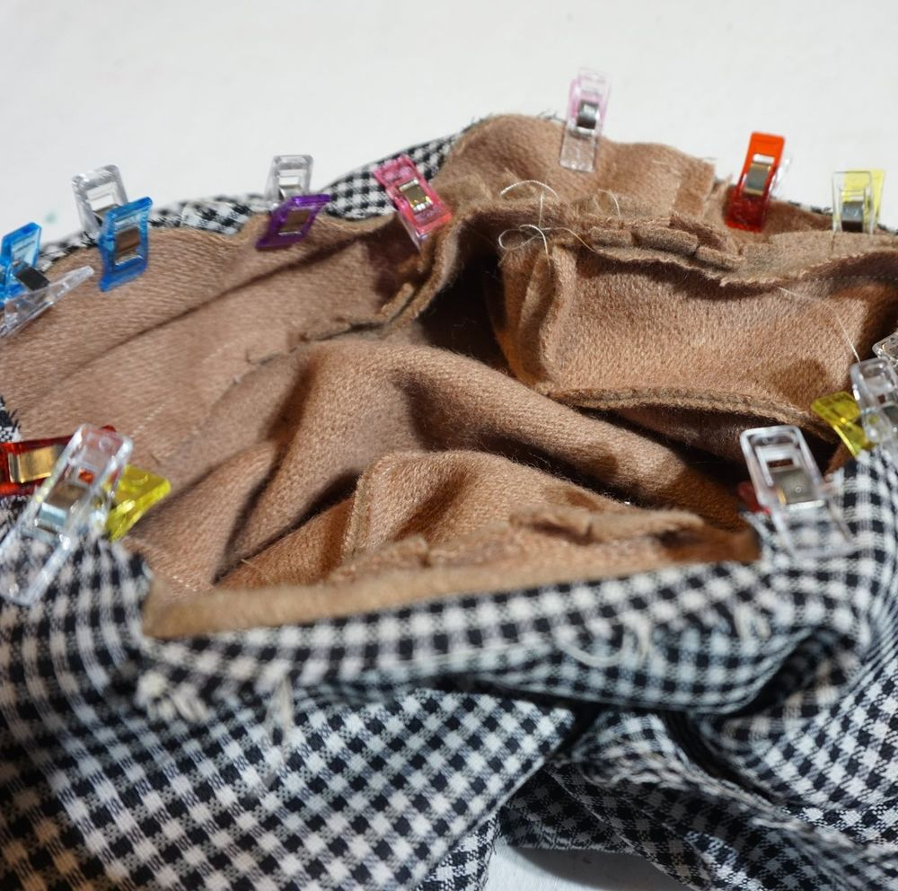
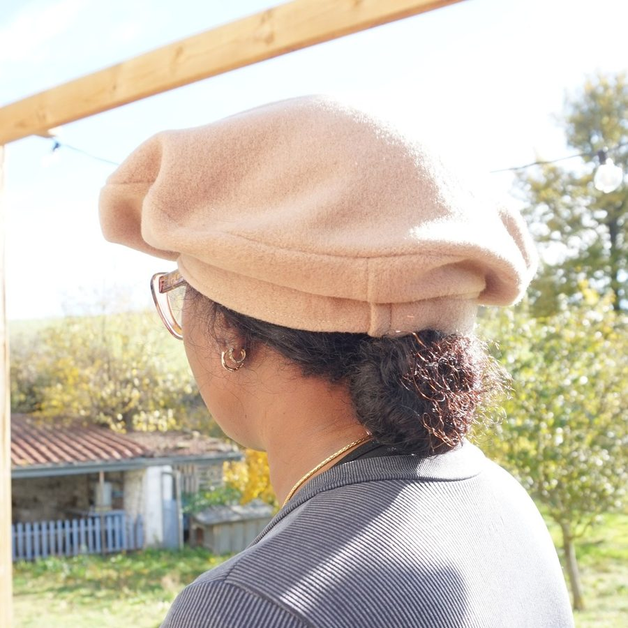
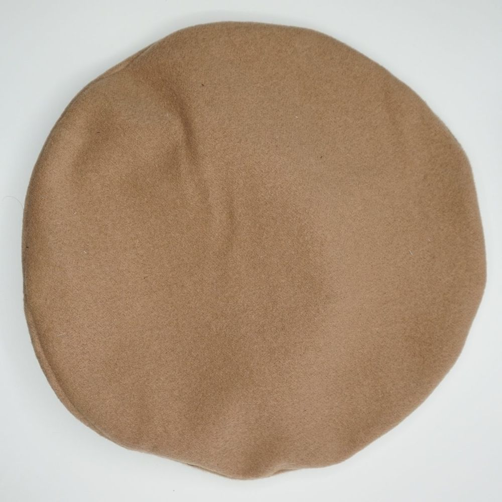
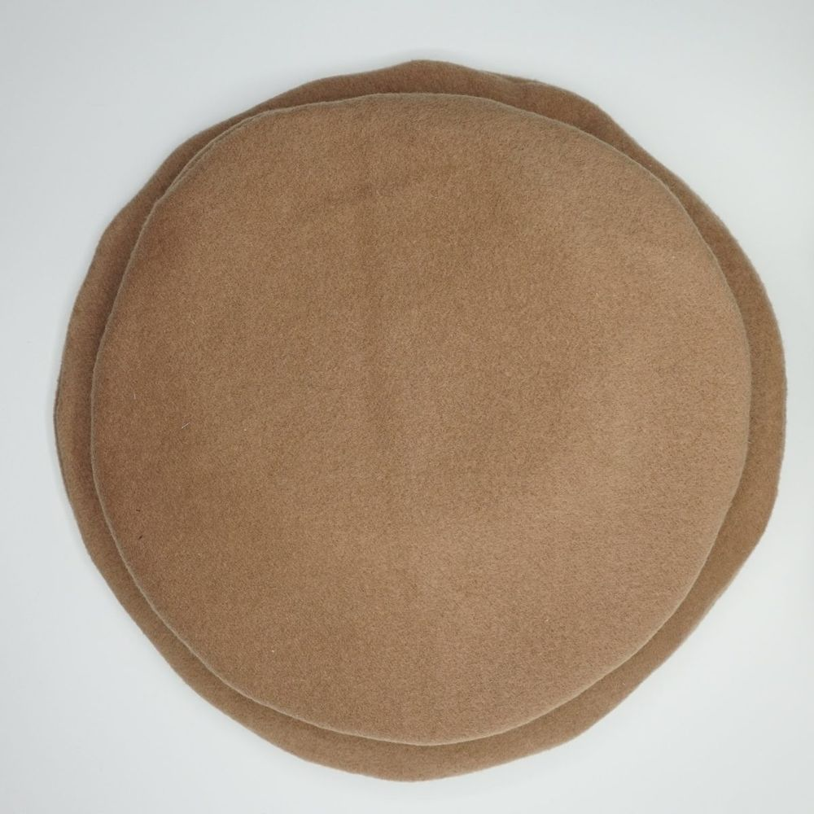

Guide du béret basque
Un béret basque sur mesure, unisexe (homme, femme), centré ou asymétrique, cousu en trois pièces (le dessus, le côté et le bandeau) et entièrement doublé.
Centré ou asymétrique ?
Ce béret peut être centré ou asymétrique, à votre choix. Beaucoup de porteurs de béret aiment le porter sur le côté, et un béret décentré facilite cela. L'asymétrie se règle à votre convenance avec le réglage « Décalage ». Pour vous aider à choisir, la coupe schématique, mise à jour en direct, vous donne une idée de la forme du béret fini.
Dimensions
Pour un adulte, le diamètre standard est de 30 cm. Attention, si vous dépassez significativement cette valeur, votre béret ressemblera plus à une galette de pizzaiolo qu'à un béret. À votre choix.
Une hauteur de 3 cm est le standard. Vous pouvez augmenter cette mesure, utile en particulier pour les personnes à chevelure abondante.
Une aisance de 1 cm est le standard. L'utilisation de cette aisance dépend notamment de l'épaisseur du tissu choisi et de votre coiffure.
Bandeau
Le patron propose deux versions du bandeau, au choix avec le réglage « Type de bandeau » : un bandeau en une pièce, ou un bandeau en deux pièces à assembler. Ce dernier est à utiliser si vous êtes sensible au contact du tissu principal (la laine, par exemple) sur la peau de votre front : l'une des deux bandes est alors taillée dans un tissu secondaire. Sinon, il n'apporte rien de plus.
Tissu
Le béret est traditionnellement fait en feutre de laine ou en laine bouillie. Un lainage léger et fluide donne un béret plus souple, alors qu'un drap de manteau épais lui donne un aspect bien plus structuré. On peut aussi utiliser un velours moyen ou lourd. C'est à votre goût. Avec le velours, la teinte varie légèrement autour du béret selon le sens du poil : c'est normal.
Pour la doublure, choisissez un tissu de doublure ordinaire ou un tissu de votre choix. Il doit être léger. Elle rend aussi le béret plus confortable : la laine peut gratter le front.
1. Découpe
Découpez les pièces et marquez les repères d'assemblage : dans le tissu principal, un dessus, un côté et un bandeau (en une ou deux pièces ; dans ce cas, la deuxième pièce dans le tissu secondaire, doublure ou autre) ; dans la doublure, un dessus et un côté.
2. Face visible
- Assemblez les extrémités du côté.
- Repassez la couture en écrasant les marges de part et d'autre.
- Bandeau : pliez le bandeau en deux, envers contre envers (bandeau en deux pièces : assemblez une longueur, laissez l'autre côté ouvert, retournez et écrasez le pli), repliez une extrémité sur 2 cm et marquez le pli au fer. Surpiquez le bandeau ainsi formé, le long du pli, en laissant libres 1,5 cm à une extrémité et 2 cm à l'autre.
- Assemblez le dessus et le côté, endroit contre endroit. Cousez, puis enlevez le surplus aux ciseaux tout au long de la couture.

Dessus et côté assemblés, surplus coupé - Retournez et repassez la couture pour l'écraser.
- Crantez le bord d'un côté du bandeau pour faciliter son assemblage au côté (attention à ne pas dépasser la marge de couture).
- Assemblez le côté à une face du bandeau, endroit contre endroit : partez de la couture de jonction du côté, en laissant dépasser le bandeau de 1 cm, et cousez en laissant libres 3 cm de chaque côté de cette jonction, pour faciliter la finition du bandeau.

Côté et bandeau assemblés, maintenus par des pinces - Retournez et écrasez cette couture au fer.
- Repliez l'extrémité du bandeau vers l'intérieur : le pli que vous avez précédemment formé doit venir recouvrir le centimètre que vous avez laissé dépasser de la couture de jonction.

L'extrémité du bandeau repliée sur la jonction - Cousez les deux extrémités du bandeau, perpendiculairement au bandeau. Une des faces du bandeau reste libre pour l'assemblage de la doublure.
- Reprenez le surjet du bas du bandeau sur la partie restée libre, pour que le surjet existe sur tout le bas du bandeau.
3. Doublure
- Assemblez les extrémités du côté.
- Repassez la couture en écrasant les marges de part et d'autre.
- Assemblez le dessus et le côté, endroit contre endroit. Cousez, puis enlevez le surplus aux ciseaux tout au long de la couture.
4. Assemblage de la face visible et de la doublure
- Placez les deux pièces endroit contre endroit, épinglez, puis cousez-les en laissant une ouverture d'environ 8 cm.

Face visible et doublure endroit contre endroit - Retournez les pièces par l'ouverture.

Retournement par l'ouverture - Écrasez la couture au fer.
- Faites une couture de finition tout le long du haut du bandeau, qui fixe ensemble les deux faces du bandeau et la doublure.
- Par quelques points discrets à l'aiguille, dans la couture du dessus et du côté, fixez la doublure à l'intérieur du béret.
Le produit fini





